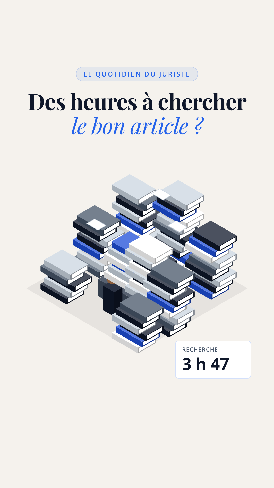
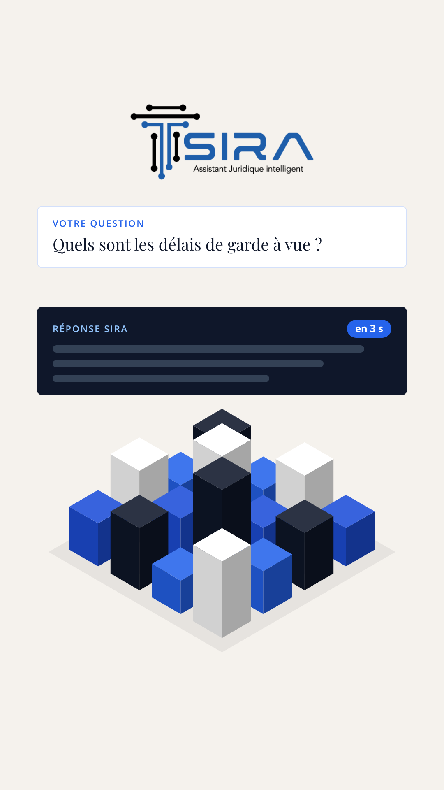
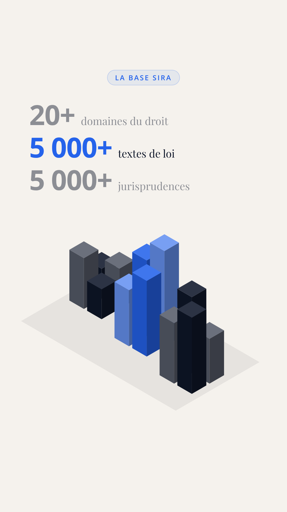
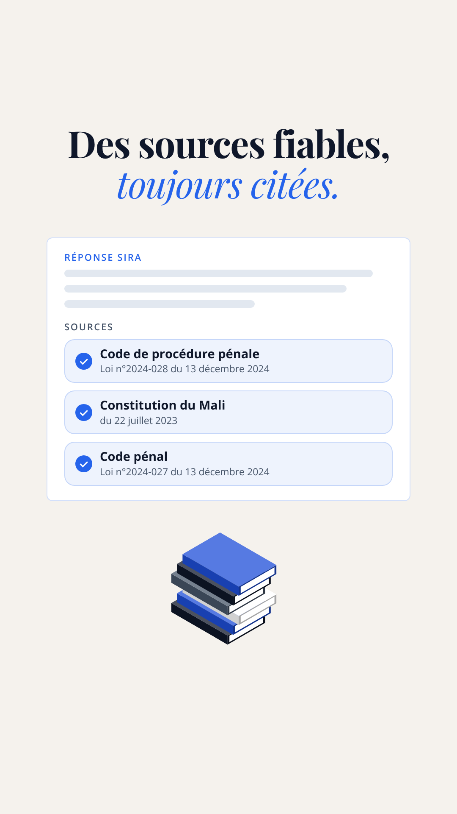
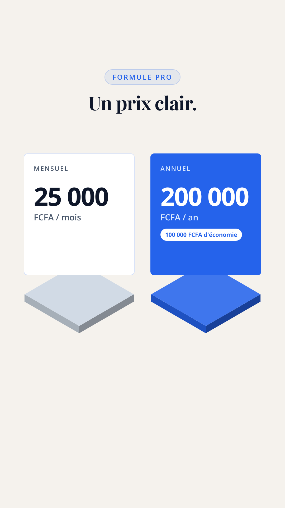
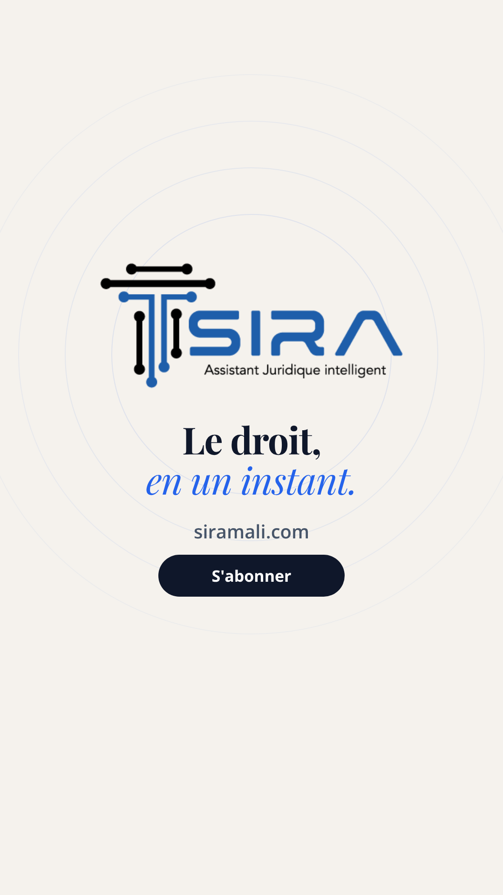

Esquisses fixes, sans animation. Voix : Lury's voice (ElevenLabs). Musique : calm minimal corporate (HeyGen).

Un juriste disparaît sous des piles de codes et d'arrêts ; le compteur de recherche affiche 3 h 47.

Le logo se pose, la question « Quels sont les délais de garde à vue ? » reçoit sa réponse « en 3 s », les piles deviennent une ville ordonnée.

Trois quartiers, trois compteurs ; chacun s'allume à son tour (ici, le 2e : 5 000+ textes de loi).

La carte réponse affiche ses sources, cochées une à une : Code de procédure pénale (Loi n°2024-028), Constitution du 22 juillet 2023, Code pénal (Loi n°2024-027).

Mensuel 25 000 FCFA, annuel 200 000 FCFA avec 100 000 FCFA d'économie.

Signature SIRA, siramali.com et bouton « S'abonner ».